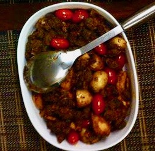

                                    <figure class="cards double">
                                        <figcaption class="caption">
                                            <h1><span style="color: #a12d2d;"><strong>Beef Fry</strong></span></h1>      
                                                
                                            <strong>Ingredients</strong>:<br /> <br /> 1. Beef - 1 kg<br /> 2. whole dry red chillies dry roasted and powdered - 10 chillies (can decrease according to spice intake capacity)<br /> 3. whole coriander seeds dry roasted and powdered - 3 tbsps<br /> 4. turmeric - 1 tsp<br /> 5. onions very thinly sliced - 4<br /> 6. baby potatoes - 8<br /> 7. cherry tomatoes - 10<br /> 8. ginger garlic paste - 1 tsp<br /> 9. coconut - thin slices of 1/2 inch - about 15 to 20 pieces<br /> 10.cloves powdered - 4&nbsp;<br /> 11.cinnamon stick powdered - 1 inch piece&nbsp;<br /> 12.fennel powdered - 1 tsp<br /> 13.salt as required<br /> 14.oil as required<br /> <br /> <strong>Method</strong>:<br /> <br /> 1. Marinate the beef with no 2, 3, 4 and 13.for about 30 mts.<br /> 2. Heat oil in a pan and saute 2 onions till they turn light yellow. Add the marinated beef and mix the sauted onion and beef well. Cover and cook on medium heat for 30 minutes. As water accumulates when cooking do not pour any extra water.<br /> 3. At the end of 30 minutes increase the heat, keep stirring and dry away the water if any left in the pan.<br /> 4. Wrap the baby potatoes in aluminium foil and bake it in oven for 30 mts in 400 deg temp. Alternately can aslo cook the potatoes in oil in a pan.<br /> 5. When the beef is cooked, heat oil in another pan and sautee the remaining onions. Add ginger garlic paste to this. When the onion turns brown add the cooked beef into this and keep stir frying it.<br /> 6. Add items no 9, 10, 11 and 12 and keep stirring.&nbsp;<br /> 7. Now add the baked baby potatoes. continue stir frying it for a minute or so.<br /> 8. Finally when its well fried and dry, add the cherry tomatoes and stir fry for another minute.<br /> <br /> <br /> </p><p>&nbsp;</p>
                                        </figcaption>
       